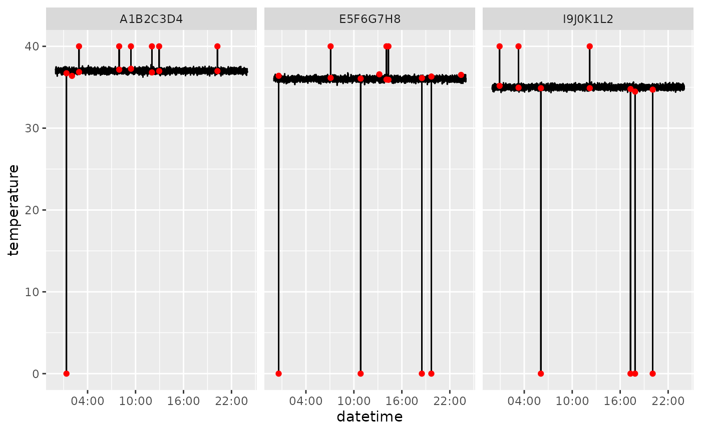
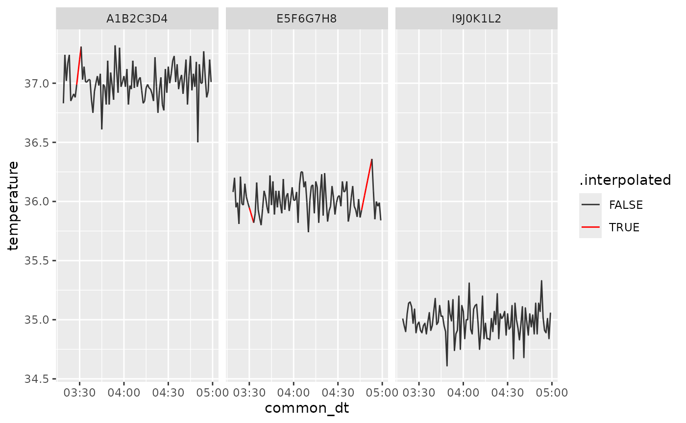

Step-by-Step UID Workflow
Source:vignettes/Step-by-Step-UID-Workflow.Rmd
Step-by-Step-UID-Workflow.RmdThis vignette walks through processing a single UID CSV file using
the functions in uid. A small example dataset is bundled
with the package, and serves to illustrate how the package works.
1. Reading raw data
file_path <- "path_to_your_data.csv"
# this will read and clean names, switch the datetime to proper datetime
raw <- read_raw_uid_csv(file_path)Since the uid package provides sample data that emulates
the result of read_raw_uid_csv, and we can use it for the
tutorial.
head(uid_sample_data)
#> datetime rfid zone session_name temperature matrix_name
#> 1 2025-01-01 00:00:00 A1B2C3D4 3 sample_session 37.16 MM1
#> 2 2025-01-01 00:00:20 A1B2C3D4 3 sample_session 37.24 MM1
#> 3 2025-01-01 00:00:40 A1B2C3D4 8 sample_session 36.66 MM1
#> 4 2025-01-01 00:01:00 A1B2C3D4 2 sample_session 37.25 MM1
#> 5 2025-01-01 00:01:20 A1B2C3D4 3 sample_session 36.98 MM1
#> 6 2025-01-01 00:01:40 A1B2C3D4 4 sample_session 36.98 MM12. Cleaning and outlier removal
# jumps of more than one degree will be counted as outliers
flagged <- flag_temperature_outliers(uid_sample_data, threshold = 1)
# remove temperature outliers
clean <- dplyr::filter(flagged, !outlier_global)You can visualize the flagged outliers with
plot_outliers(). This will save the plots to specific
locations.
plot_outliers(flagged, output_dir = tempdir(), filepath = file_path)
# example for flagged
ggplot2::ggplot(flagged, ggplot2::aes(datetime, temperature, group=rfid)) +
ggplot2::geom_line() +
ggplot2::geom_point(
data = flagged |> dplyr::filter(outlier_global),
ggplot2::aes(datetime, temperature),
color = "red"
) +
ggplot2::facet_wrap(~rfid) +
ggplot2::scale_x_datetime(date_breaks = "6 hours", date_labels = "%H:%M")
3. Activity calculation
with_activity <- calculate_activity(clean)4. Downsampling and interpolation
Sample data is provided with a sample interval of 20 seconds. We can aggregate the data with precision of 1 minute.
down_temp <- downsample_temperature(with_activity, n = 1, precision = "minute")
down_act <- downsample_activity(with_activity, n = 1, precision = "minute")
merged <- dplyr::left_join(
down_temp, down_act,
by = c("session_name", "rfid", "common_dt", "matrix_name")
)Data acquisition might generate NAs that survive
downsampling. We included some of such gaps in the sample data.
dplyr::filter(merged, is.na(temperature))
#> # A tibble: 37 × 6
#> session_name rfid matrix_name common_dt temperature activity_index
#> <chr> <chr> <chr> <dttm> <dbl> <dbl>
#> 1 sample_sess… A1B2… MM1 2025-01-01 03:28:00 NA NA
#> 2 sample_sess… A1B2… MM1 2025-01-01 03:29:00 NA NA
#> 3 sample_sess… A1B2… MM1 2025-01-01 03:30:00 NA NA
#> 4 sample_sess… A1B2… MM1 2025-01-01 17:30:00 NA NA
#> 5 sample_sess… A1B2… MM1 2025-01-01 17:31:00 NA NA
#> 6 sample_sess… A1B2… MM1 2025-01-01 17:32:00 NA NA
#> 7 sample_sess… A1B2… MM1 2025-01-01 17:33:00 NA NA
#> 8 sample_sess… A1B2… MM1 2025-01-01 17:34:00 NA NA
#> 9 sample_sess… A1B2… MM1 2025-01-01 17:35:00 NA NA
#> 10 sample_sess… A1B2… MM1 2025-01-01 17:36:00 NA NA
#> # ℹ 27 more rowsIt might be desired to interpolate such NAs using
interpolate_gaps(). We can set add_flag = TRUE
to check what values were interpolated.
interp <- merged |>
dplyr::group_by(rfid, session_name, matrix_name) |>
interpolate_gaps(
max_gap = 10,
target_cols = c("temperature", "activity_index"),
add_flag = TRUE
)
dplyr::filter(interp, .interpolated) |>
dplyr::select(rfid, common_dt, temperature, .interpolated)
#> # A tibble: 37 × 4
#> rfid common_dt temperature .interpolated
#> <chr> <dttm> <dbl> <lgl>
#> 1 A1B2C3D4 2025-01-01 03:28:00 37.0 TRUE
#> 2 A1B2C3D4 2025-01-01 03:29:00 37.1 TRUE
#> 3 A1B2C3D4 2025-01-01 03:30:00 37.2 TRUE
#> 4 A1B2C3D4 2025-01-01 17:30:00 37.0 TRUE
#> 5 A1B2C3D4 2025-01-01 17:31:00 37.0 TRUE
#> 6 A1B2C3D4 2025-01-01 17:32:00 37.0 TRUE
#> 7 A1B2C3D4 2025-01-01 17:33:00 37.0 TRUE
#> 8 A1B2C3D4 2025-01-01 17:34:00 37.0 TRUE
#> 9 A1B2C3D4 2025-01-01 17:35:00 37.0 TRUE
#> 10 A1B2C3D4 2025-01-01 17:36:00 37.0 TRUE
#> # ℹ 27 more rowsBy increasing the max_gap parameter, we will be
interpolating larger gaps.
We can visualize the results of the interpolation by slicing a portion of the dataset to make the linear interpolation more evident.
ggplot2::ggplot(interp |> dplyr::slice(200:300, .by = rfid), ggplot2::aes(common_dt, temperature, group=rfid, color = .interpolated)) +
ggplot2::geom_line() +
ggplot2::facet_wrap(~rfid) +
ggplot2::scale_x_datetime(date_breaks = "30 min", date_labels = "%H:%M")+
ggplot2::scale_color_manual(values = c("TRUE" = "red", "FALSE" = "gray20"))
The interp data frame now holds cleaned, downsampled
values with short gaps interpolated. For processing multiple files
automatically, see the vignette on process_all_uid_files()
or (help("process_all_uid_files")).